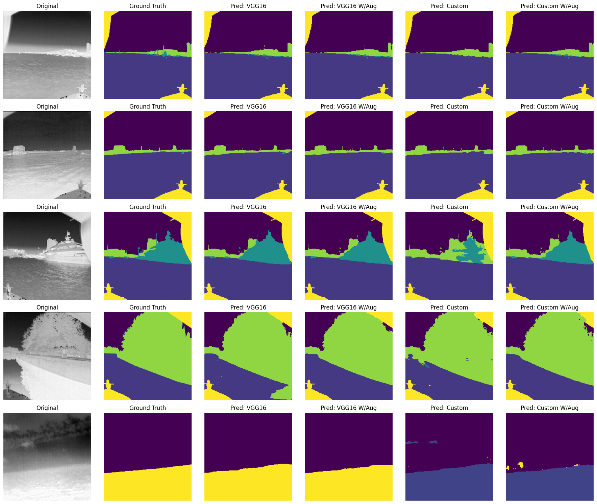
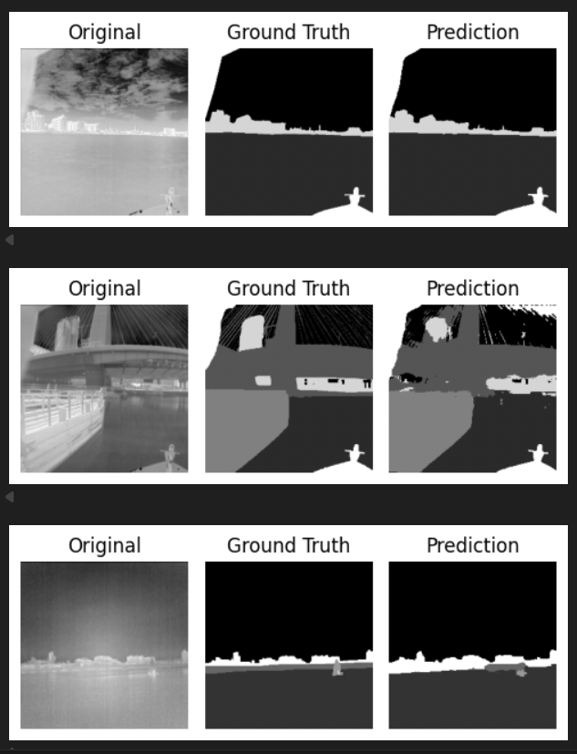

Control
Safety-critical control, optimization-based controllers and trajectory tracking for autonomous vehicles.
MSc Robotics Engineering Student
Developing autonomous robotic systems through advanced control, perception and real-world deployment.
About
MSc Robotics Engineering student at the University of Porto with a strong interest in autonomous vehicles, robot control and perception systems. My work combines optimization-based control, computer vision, machine learning and embedded systems, with projects ranging from autonomous racing vehicles to multi-robot coordination and industrial automation.
Safety-critical control, optimization-based controllers and trajectory tracking for autonomous vehicles.
Computer vision, LiDAR processing, SLAM and localization for robotic systems.
Embedded systems, sensor integration, industrial automation and robotic prototyping.
Interests
Selected Work
Safe autonomous control
Developed a safety-critical autonomous racing controller for a 1:43 scale vehicle using Control Barrier Functions (CBFs), Control Lyapunov Functions (CLFs) and quadratic programming. The system was validated in simulation and deployed on a real vehicle platform, achieving real-time trajectory tracking and collision avoidance.


Warehouse robotics
Designed and implemented a multi-robot warehouse system using ROS, LiDAR-based localization and autonomous navigation. The project included mapping, localization, path planning and communication between robots, validated through warehouse logistics scenarios developed for the Robot@Factory Portugal national competition.
Computer vision segmentation
Built and evaluated a customized U-Net architecture for semantic image segmentation, comparing its predictions against a VGG16-based U-Net baseline with and without data augmentation. The project focused on improving segmentation quality across challenging visual scenes through deep learning model design and experimental evaluation.


Industrial automation
Developed a fully automated folding machine, including mechanical design, electrical integration and Siemens PLC programming. The project involved sensor integration, actuator control and industrial automation principles for reliable and repeatable operation.


Mapping and localization
Implemented a SLAM pipeline to explore mobile robot localization and mapping, combining sensor data processing, occupancy map generation and robot pose estimation in a simulated environment.